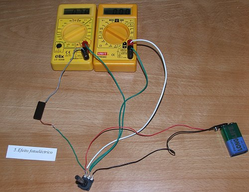

O efeito fotoeléctrico
A teoria da luz de Maxwell, em que a luz é simplesmente uma onda electromagnética, abria a possibilidade de serem produzidos outros tipos de ondas electromagnéticas a partir de circuitos eléctricos. Hertz, no fim do século XIX, foi a primeira pessoa a ter sucesso nessa área. Durante as suas experiências, Hertz observou que a luz produzida por uma faísca num circuito podia induzir uma corrente eléctrica em outros circuitos afastados que usava para detectar as ondas electromagnéticas.
Uns poucos anos mais tarde, com a descoberta do electrão por parte de Thomsom, ficou claro que o efeito observado por Hertz, designado de efeito fotoeléctrico, era devido ao escape de alguns electrões num metal, quando é atingido por luz.
A energia electromagnética da luz é absorvida pelos electrões no metal, fazendo com que alguns deles saltem para fora do metal. O problema que ninguém conseguia explicar no início do século XX era porquê a energia dos electrões libertados por efeito fotoeléctrico não aumeta quando aumenta a intensidade da luz, mas sim aumenta em função da frequência da luz incidente. De facto há uma frequencia limiar da luz por baixo da qual não ocorre efeito fotoeléctrico.
A energia dos electrões libertados por efeito fotoeléctrico pode ser medida ligando à célula fotoeléctrica uma fonte externa, que contrarie a força electromotriz da célula fotoeléctrica, de modo que a corrente no circuito seja nula.
Em 1905, quando já não restavam dúvidas acerca da natureza ondulatória da luz, Einstein publicou um artigo onde explica perfeitamente o efeito fotoeléctrico, admitindo que a luz fosse composta por corpúsculos -fotões- com energia directamente proporcional à frequência da luz.
Na teoria dos fotões, a energia que transporta a luz não varia em forma contínua, mas sim em forma discreta; podem ser emitidos 1, 2, 3, etc. fotões, mas não uma fracção deles. Essa teoria explicava também o sucesso da hipótese de Planck (1900), quem para poder explicar o espectro de luz produzido por um objecto quente, admitiu que a energia da radiação do objecto só podia ter valores discretos: um quantum de energia.
Os trabalhos de Planck e de Einstein dariam origem à física quântica. Na física quântica todos os objectos físicos são tanto ondas como partículas (dualidade onda-partícula). A energia passa de um lugar para outro como se fosse uma onda, mas é absorvida ou produzida em forma discreta, como se tratasse de partículas.
Ao final a luz, tal como qualquer tipo de matéria, é tanto onda como partícula. Isso é o que acontece no mundo submicroscópico, mas ao nivel macroscópico da nossa experiência quotidiana aparece uma distinção clara entre ondas e partículas.